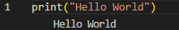
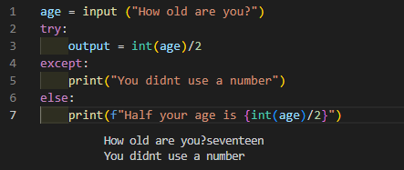

Throughout the course we learned python. I used a variety of methods to learn more into how python is coded. Python is a backend language that outputs primarily in a console as text. There are ways to make it into a GUI through different libraries also. Python has a special place in my heart as it was the first ever language I learnt over 5 years ago while in high-school.
I began python by learning the basic if-else statements, print and while loop. From here I would experiment with different possiblities with no real focus other than to figure out how they work. I believe the first ever program I made was just a loop saying something like yes or no depending if the user input a 1 or a 2.
After this I then began to think of end products for some code. These were simple such as rolling a dice or creating a shopping list. Where I didnt know what to do I would look up different snippets of code and use them. Rather than just copy the code and leave it I would then dissect this code, breaking it down, seeing how it functions and then ultimately rewriting it for my own purposes. Some useful pieces of code I learnt this way included "Try" functions which would help me when user inputs could not be converted to the correct variable type such as turning a string into an integer.
I had done almost all my prior learning of python on my own or with friends. After starting the course I learnt really useful formattinging options such as the f format and how defining functions actually works. Looking back on it, that would have solved so many prior problems I had. One function I defined that really helped me learn how it works was the typewriter function I wrote for the CodeNation group project. Its fairly simple but using it further in my code really helped me become more flexible using them.